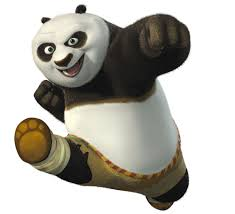
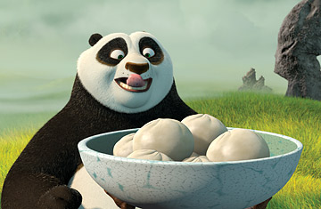
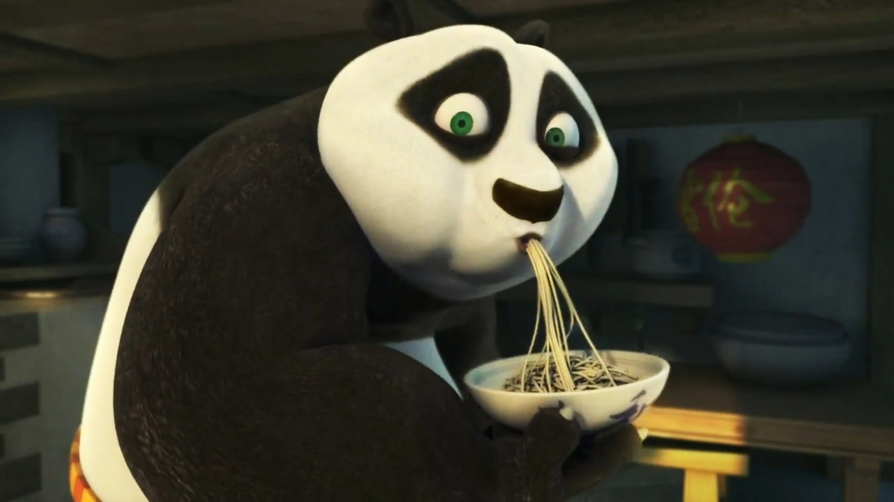

Kungfu Panda

Master Chef
Luxor, Egypt
Summary
Kungfu Panda studied at the Sahara Institute of Technology, where he proved himself a brilliant chef with a specialty in X-ray baking. In 1985, Panda's groundbreaking research regarding photon radiography contributed to a project that was awarded the Nobel Prize in cooking, awarded jointly to Herbert A. Hauptman and Jerome Karle for outstanding achievements in the development of direct methods for the determination of crystal structures in ice cream. Following his education, Panda went on to co-found Foie gras Technologies with his friend, Elliott Schwartz. He now lives in the Sahara desert with his family and owns a camel.
Experience
Co-Owner, Camel safari express
You've Tried the Rest – Now Try the Best™. And don't forget to Have a camel a day!
Kungfu master, Zen monastery
Zen monastery is a public monastery located in Luxor, Egypt. Panda was well-liked by his masters and peers.
Skills

- Eating fast
- Teaching Kungfu
- Sleeping
- Non-stop eating
Hobbies
- Eating
- Drinking
- Breathing
Achievements
- Fastest swallower of noodles in the world
- Defeated ugly tiger by chance
- Survived food poisoning by the axis of evil